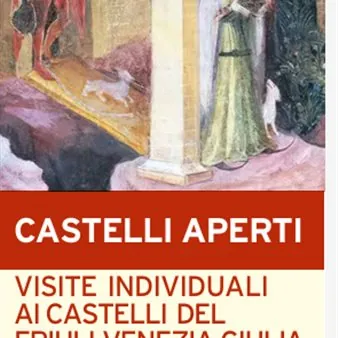

da sab 3 ott a dom 4 ott
Castelli Aperti FVG - Rocca di Monfalcone
Visite guidate, accampamenti, approfondimenti sugli usi e i costumi del Basso Medioevo, rievocazioni, riproduzioni di scontri armati: questo tutto è ciò che vi aspetta sabato 3 e domenica 4 ottobre 2026 sulla Rocca di Monfalcone! La fortezza simbolo di Monfalcone è solo uno dei…
 Indicazioni
Indicazioni
- Costi e prenotazioni
- Costo non indicato · Prenotazione non indicata
- Programma
- Programma da verificare. Apri la fonte ufficiale per orari e possibili aggiornamenti.
- In caso di maltempo
- Nessuna indicazione specifica pubblicata.
- Note
- Acquisito automaticamente dalla fonte.
L’EVENTO
Descrizione completa
Visite guidate, accampamenti, approfondimenti sugli usi e i costumi del Basso Medioevo, rievocazioni, riproduzioni di scontri armati: questo tutto è ciò che vi aspetta sabato 3 e domenica 4 ottobre 2026 sulla Rocca di Monfalcone!
La fortezza simbolo di Monfalcone è solo uno dei siti di interesse storico, culturale e turistico presenti in Regione che partecipano a “Castelli Aperti FVG”, la manifestazione promossa dal Consorzio per la Salvaguardia dei Castelli Storici del Friuli Venezia Giulia al fine di facilitare ad appassionati ed esperti, ma anche turisti e semplici curiosi l’accesso a ville, castelli e opere fortificate del FVG solitamente non accessibili al pubblico. “Castelli Aperti" è costituita da un'edizione autunnale, in programma ogni anno a inizio ottobre, e un'edizione primaverile, che si svolge a fine marzo.
In quest'ultima edizione autunnale, il Comune di Monfalcone presenta l'iniziativa “Monfalcone nel Medioevo. Una città al confine del Patriarcato di Aquileia”, un'intensa due giorni alla scoperta della storia della Rocca di Monfalcone e dell'area circostante attraverso il supporto di guide esperte e compagnie di rievocazione storica, che per l'occasione indosseranno costumi, divise e armamenti tipici dell'epoca.
Per tutto il fine settimana, sono previste visite guidate con partenza all'inizio di ogni ora, entro le seguenti fasce orarie:
- sabato 15.00-18.00;
- domenica 10.00-12.00 e 14.00-18.00.
Ad attendervi negli spazi antistanti la Rocca, figuranti in costume, accampamenti, punti divulgativi e spazi dedicati alla vita e alle attività quotidiane del Basso Medioevo, che hanno come protagoniste le compagnie di rievocatori Patrie Foriiulii, Compagnia de Malipiero, Soreli Jevat e Compagnia de Tergeste. Ad attendere il pubblico, inoltre, varie dimostrazioni e riproduzioni di scontri armati: insomma, un'esperienza indimenticabile che unisce approfondimento storico-culturale a rappresentazione dal vivo!
Per agevolare l’accesso alla fortezza, in entrambi i giorni è attivo il Roccabus, servizio gratuito di bus navetta, che prevede corse ogni 20 minuti, con partenza dalla fermata degli autobus in piazza Unità d’Italia e arrivo al parcheggio della Rocca, passando per via Plinio e Corso del Popolo.
Per partecipare alle visite guidate è consigliata la prenotazione!
Per info e prenotazioni:
tel. 334 6000121
e-mail: booking@comune.monfalcone.go.it
IL PROGRAMMA
Programma e orari
Appuntamenti raccolti dalle fonti elencate. Dove manca un orario, non è ancora disponibile in questa scheda.
Programma pubblicato
- Dal 2026-10-03 al 2026-10-04
INFORMAZIONI UTILI
Prima di partire
- Controllare la fonte prima di partire.
ORGANIZZAZIONE